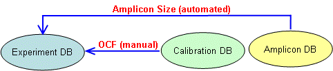

The LRE Analyzer employs three types of databases :
Each database type is maintained independently as files with a distinct file extension: *.exp, *.cal and *.amp respectively. Thus, multiple database files can be created for each database type. An Experiment database file, for example, holds a group of related Runs (a concept taken from the RDML guideline for exchange of qPCR data1), so that data generated from different projects can be maintained within their own dedicated database file.
Database files can also be shared among multiple users, although note that a database file can only be opened by one user at a time. This allows, for example, construction of a master amplicon database for use by multiple projects, in addition to shared calibration databases holding calibration profiles generated by a specific reaction setup conducted on a single instrument, but produced by different projects.
The Three LRE Databases

Both the Calibration and Amplicon databases provide supporting functionality for the Experiment DB, by allowing the number of target molecules to be determined through the combination of amplicon size and an optical calibration factor, as described in the LRE Overview section.
The primary function of the Amplicon DB is thus to provide amplicon sizes, accomplished automatically during run import. As each individual profile is imported, the Amplicon DB is asked to provide the size of the its amplicon. If the corresponding amplicon is missing, or if an amplicon database is not open, the amplicon size is set to zero. Note also that the amplicon size can be manually edited once a profile has been imported.
The primary function of the Calibration DB is to generate an average optical calibration factor (OCF) which correlates fluorescence units to DNA mass. This allows convertion of target quantities expressed in fluorescence units into the number of target molecules. Details of how an average OCF is generated and how it is used for absolute quantification is provided in the Optical Calibration section.
See also:
Experiment Database
Calibration Database
Amplicon Database
1. Nucleic Acids Research 2009 37(7):2065-2069